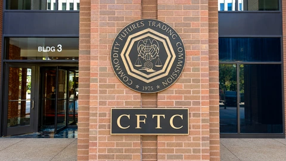
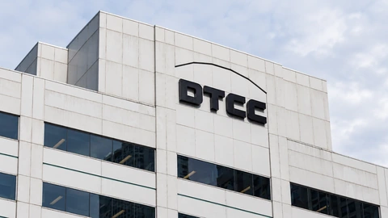

Financial news, market analysis and technology
Top Story
Market Analysis View all →

Market Analysis
Shell Lifts Buyback to $5 Billion as Refining Powers Quarterly Profit
Shell nearly doubled adjusted earnings from a year earlier and expanded its buyback. Strong refining margins helped offset lower crude prices.
Market Analysis
Volkswagen Posts €5.9 Billion Operating Loss as Porsche Writedown Bites
A Porsche goodwill charge deepened Volkswagen’s quarterly loss. Even before special items, weaker margins keep pressure on its restructuring.

Market Analysis
Lloyds Nearly Doubles Quarterly Profit but Holds Its Annual Targets
Lloyds reported £2.33 billion in quarterly pretax profit. Lower remediation costs helped, while deposit competition limited the earnings outlook.
Market Analysis
Ford Raises Profit Forecast Floor as Higher Costs Test Its Recovery
Ford lifted the bottom of its annual profit forecast by $500 million. Higher commodity costs and weaker vehicle volumes complicate the improvement.
Tech & AI View all →

Tech & AI
Microsoft’s Azure Growth and Cash Flow Lift Its AI Investment Case
Azure revenue rose 48% and free cash flow reached $18.6 billion. Delayed infrastructure deliveries mean Microsoft’s spending test is still ahead.

Tech & AI
Google Unveils Gemini 4 Carbon With Early Access Limited to Cyber Defenders
Google’s new AI model targets software security and longer coding tasks. Initial access and introductory pricing have important limits.

Tech & AI
Amazon Adds an Alexa Clock and Photo Frame as Devices Unit Cuts Jobs
Five new Alexa devices extend Amazon’s home hardware range. The rollout comes as its devices and services unit reduces staff.

Tech & AI
SAP Replaces Costly AI Models as It Focuses on Profit per Task
New details of SAP’s model selection show why lower costs per useful task can matter even when total spending on artificial intelligence keeps rising.
Crypto View all →

Crypto
Bitcoin Core Discloses Node-Crash Flaws Found in AI-Assisted Review
Three Bitcoin Core advisories explain crash risks and available fixes. One flaw affects Windows, macOS and BSD nodes, while Linux avoids that code path.

Crypto
CFTC Chief Raises Liability Questions for AI Crypto Trading Agents
At a new public forum, Michael Selig examined who controls autonomous trading software. His remarks did not create a new registration rule.

Crypto
Wall Street’s DTCC Launches Tokenized Securities Service
The market infrastructure group’s service is live on Canton and its private Besu network. Eligible asset value is distinct from tokens issued.

Crypto
Coinbase Adds Ripple’s RLUSD as Stablecoin Distribution Broadens
RLUSD is available across Coinbase’s retail and institutional platforms. Planned collateral support remains a later step, distinct from today’s launch.
News Feed